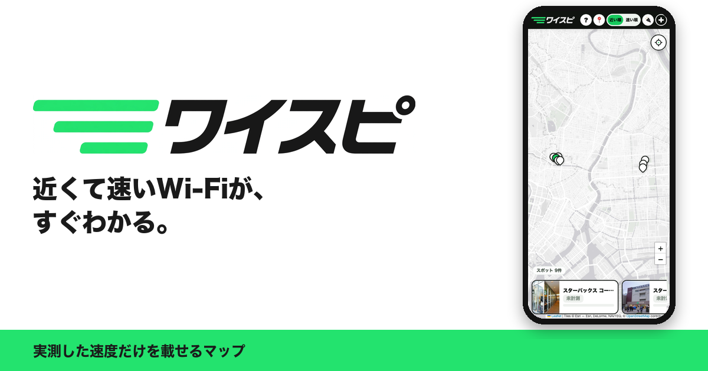
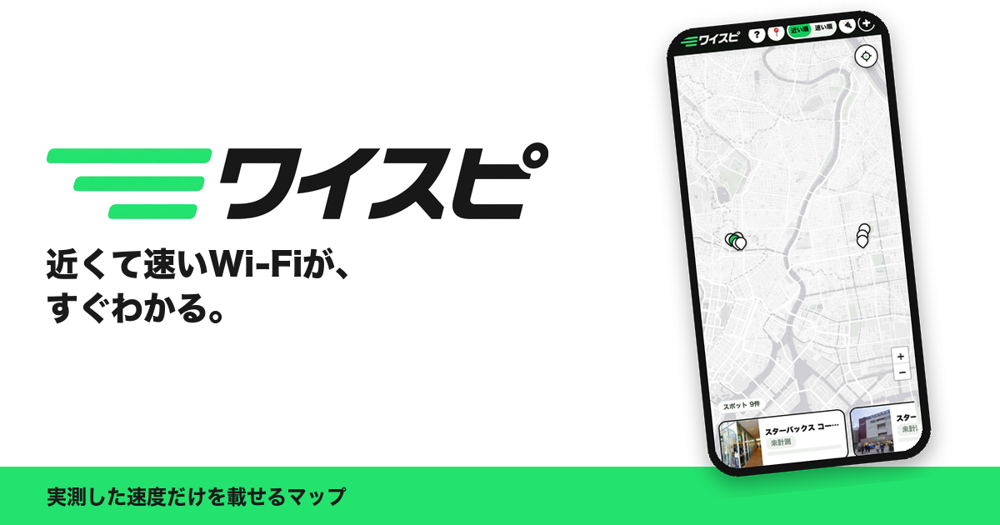
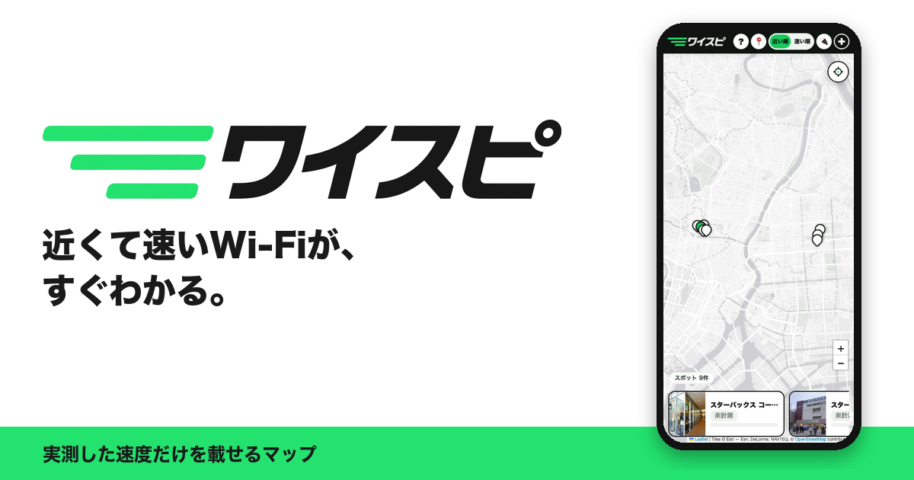
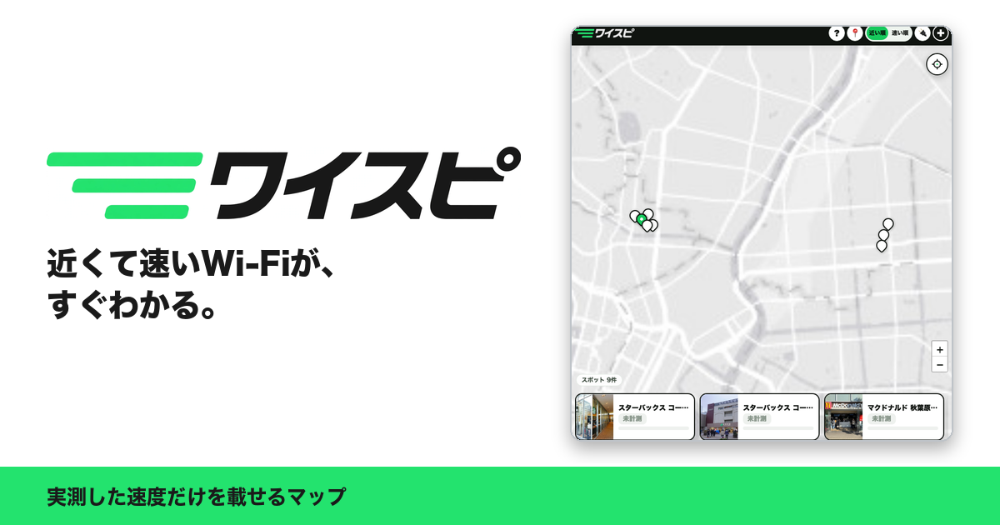
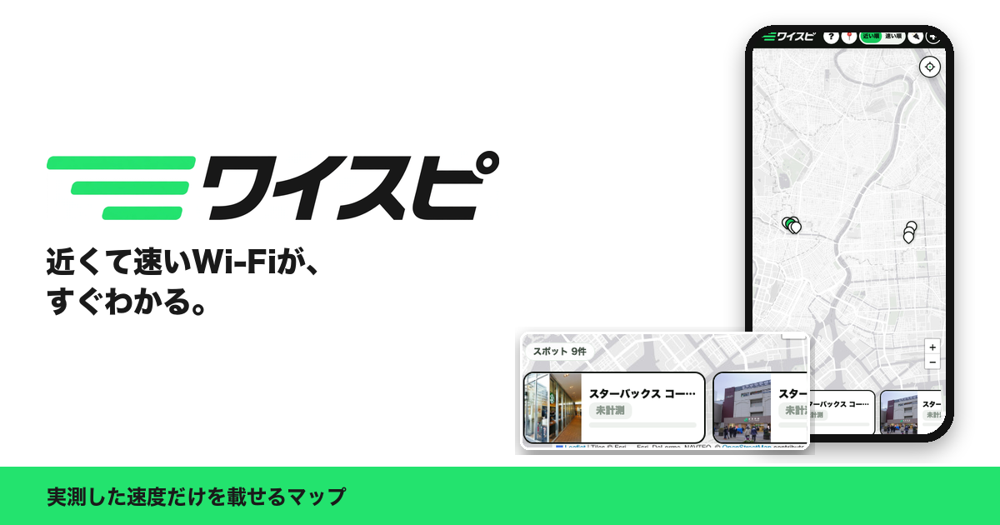

1スマホ枠・右立て

ロゴ高さ：99px ／ コピー高さ：99px（一致）
ロゴ 648×99px。右にスマホ枠つきの実画面を立て、左にロゴ＋コピーを縦並び。
ロゴ 648×99px。右にスマホ枠つきの実画面を立て、左にロゴ＋コピーを縦並び。
2斜め・大きめ

ロゴ高さ：92px ／ コピー高さ：92px（一致）
ロゴ 602×92px。スマホを斜めに大きく配置し、下端が緑帯に少し重なる。
ロゴ 602×92px。スマホを斜めに大きく配置し、下端が緑帯に少し重なる。
3帯にはみ出し

ロゴ高さ：104px ／ コピー高さ：104px（一致・全案中最大）
ロゴ 681×104px。スマホの下端が緑帯の上に重なる。
ロゴ 681×104px。スマホの下端が緑帯の上に重なる。
4幅広パネル

ロゴ高さ：87px ／ コピー高さ：87px（一致）
ロゴ 569×87px。右に幅広パネル（横幅のある画面で撮った実画面。スポットカードが3件見える）。
ロゴ 569×87px。右に幅広パネル（横幅のある画面で撮った実画面。スポットカードが3件見える）。
52枚並べ

ロゴ高さ：83px ／ コピー高さ：83px（一致）
ロゴ 543×83px。スマホ画面に、スポットカード部分の拡大パネルを重ねた2枚構成。
ロゴ 543×83px。スマホ画面に、スポットカード部分の拡大パネルを重ねた2枚構成。